DPDK
Table of Contents
传统上，网卡驱动程序运行在Linux的内核态，以中断方式来唤醒系统处理，这和历史形成有关。早期CPU运行速度远高于外设访问，所以中断处理方式十分有效，但随着芯片技术与高速网络接口技术的一日千里式发展，IO速度大于CPU速度
1 环境
转发面硬件类型
- ASIC&FPGA
- NP
- 多核通用处理器
linux内核网络包处理流程
- 数据包到达网卡设备
- 网卡设备依据配置进行DMA操作
- 网卡发送中断，唤醒处理器
- 驱动软件填充读写缓冲区数据结构
- 数据报文达到内核协议栈，进行高层处理
- 如果最终应用在用户态，数据从内核搬移到用户态
- 如果最终应用在内核态，在内核继续进行
1.1 DPDK对收发包的改进
- 轮询而不是中断
- 用户态驱动
- 不受限于内核现有的数据格式和行为定义
- 规避不必要的内存拷贝又避免了系统调用
- 不受限于内核现有的数据格式和行为定义
- CPU affinity，特定任务只在某个核上工作
- 申请大页来降低访问开销
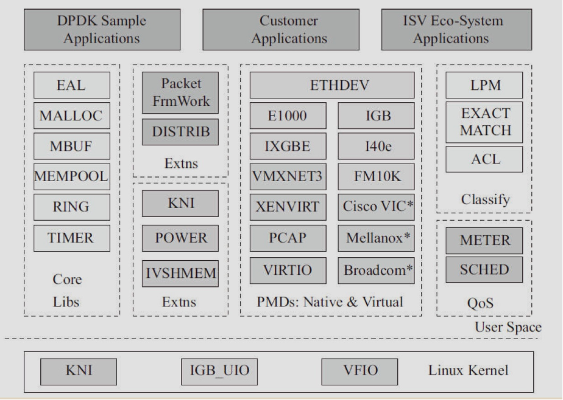
包越小要达到linerate的延迟需要更小
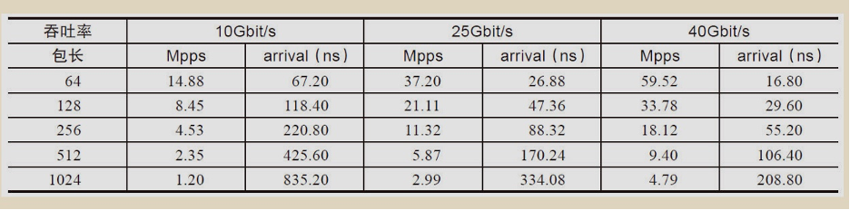
1.2 基本函数
rte = runtime environment
eal = environment abstraction layer
| 函数名 | 描述 |
|---|---|
| rte_eal_init | 各种初始化(配置，内存池，队列，告警，中断，PCI，定时器，插件，主线程，轮询，等) |
| rte_eal_remote_launch | 在逻辑核上运行回调，类似pthread_create |
| rte_pktmbuf_pool_create | 内存池分配 |
| rte_eth_dev_configure | 网口配置队列 |
| rte_eth_rx_queue_setup/rte_eth_tx_queue_setup | 配置端口的某个队列 |
| rte_eth_dev_start | 启动网卡 |
| rte_eth_promiscuous_enable | 开启混杂模式 |
几个简单的sample
- examples/helloworld 指定核打印hello world
- examples/skeleton 单核报文收发程序
- examples/performance-thread/l3fwd-thread 简单L3转发
2 Cache和内存
2.1 NUMA
早期的CPU架构所有的CPU核前端总线连到北桥，北桥连RAM同时下挂南桥连其他外设，瓶颈在北桥
SMP是相对于NUMA的架构
- 共享所有硬件资源
- 平等处理器核间关系
- 内存统一结构寻址
- 处理器和内存、处理器间都通过一条总线相连
而NUMA如下图删除了北桥，CPU自已直连RAM，所以访问本地内存快，但是访问其他RAM有时会经过多个CPU
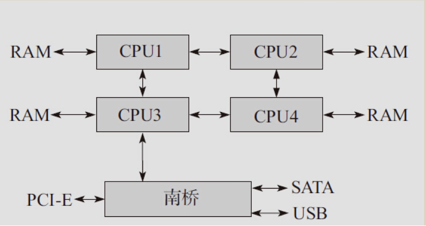
2.2 DPDK的NUMA机制
- pre-core memory
每个核都有属于自已的内存，对于经常访问的数据结构，每个核都有自已的备份
- 本地设备本地管理
处理器用本地内存来处理本地设上产生的数据，如下分配结构体时通过socket_id获得本地内存
/*allocatememoryforthequeuestructure*/
q = rte_zmalloc_socket("fm10k", sizeof(*q), RTE_CACHE_LINE_SIZE, socket_id);
2.3 Cache
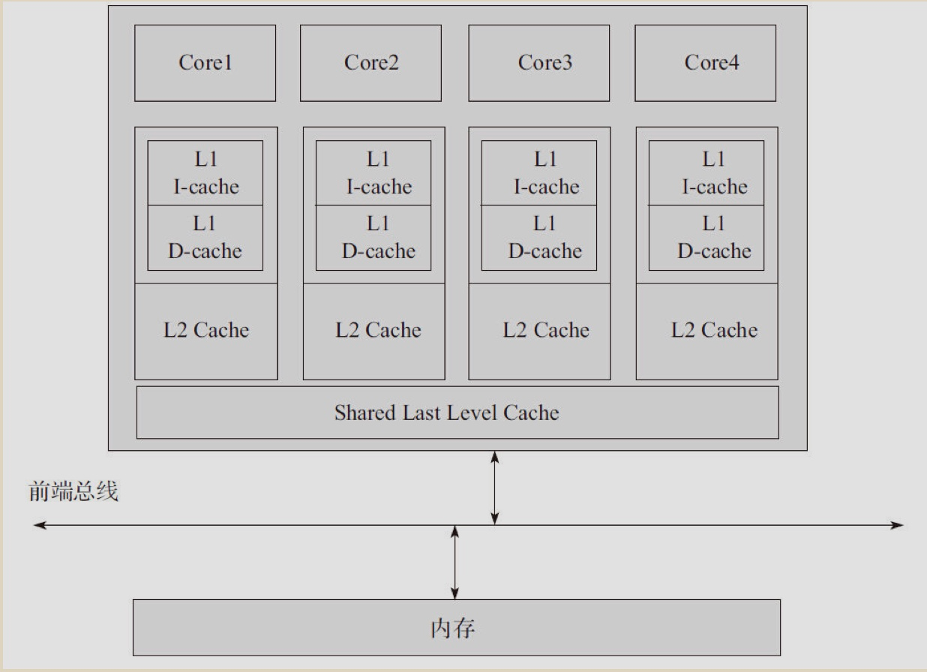
写策略
- write-through
- write-back
- write-combining 比较显卡显存，cache line的数据全改写完后才写回内存
- uncacheable 比如PCI设备memory bar不能缓存，要尽快写到设备内部
一些CPU架构会提供预取cache指令来加速
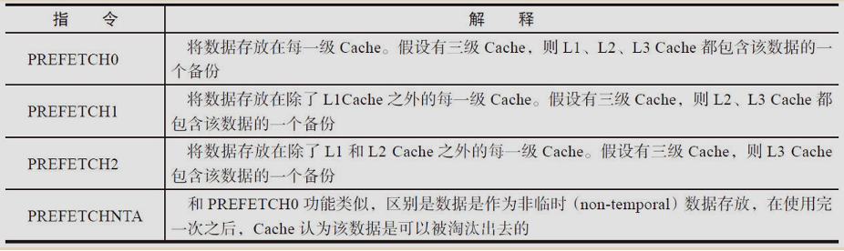
DPDK包处理流程
- 写接收描述符到内存，填充数据缓冲区指针
- 从内存中读取接收描棕符来确认是否网卡将报文填充
- 更新描述符信息到控制结构体
- 更新接收队列寄存器
- 转发确定
- 报文信息填入发送队列发送描述符，更新发送队列寄存器
- 检查是否被网卡发送
- 释放数据缓冲区
2.4 DPDK的cache机制
- 定义cache宽的数据结构
** Minimum Cache line size. *
#define RTE_CACHE_LINE_MIN_SIZE 64
** Force alignment to cache line. *
#define __rte_cache_aligned __rte_aligned(RTE_CACHE_LINE_SIZE)
- 预取指令
rte_prefetch0(p)
- 避免多核访问同一个内存地址或数据结构
struct lcore_conf {
uint8_t status;
uint8_t socketid;
uint16_t nb_ports;
uint16_t portlist[RTE_MAX_ETHPORTS];
} __rte_cache_aligned;
struct lcore_conf lcore_conf[RTE_MAX_LCORE];
- 网卡支持多队列时，为每个核准备一个单独的接收/发达队列
Note: 多级页表的好处
假设有一个程序，代码段加数据段可以放在两个4KB的页内。如果使用三段的方式，那么需要一个页存放页目录表（里面只有一个目录项有效），一个页存放页表（里面有两个目录项有效），因此需要总共两个页8192个字节就可以了；如果使用两段的方式，那使用bit[31：12]共20位来查页表，根据其范围，那么需要有220个表项，因此需要4MB来建立页表，也就是1024个物理页，而其中只有两个表项是有效的，
2.5 DPDK的大页
当使用大页(2M&4M一页)时，页表项减会变少，从而降低TLB不命中的概率
使用大页分两步
- 预留内存
# 非NUMA echo 1024>/sys/kernel/mm/hugepages/hugepages2048kB/nr_hugepages # NUMA echo 1024>/sys/devices/system/node/node0/hugepages/hugepages2048kB/nr_hugepages echo 1024>/sys/devices/system/node/node1/hugepages/hugepages2048kB/nr_hugepages
- 激活hugetlbfs文件系统
mkdir /mnt/huge mount -t hugetlbfs nodev /mnt/huge
2.6 DDIO
传统报文路径: 网卡->PCI->内存->cache->CPU->cache->内存->PCI->网卡
DDIO: 网卡->LLC Cache->CPU->LLC Cache->网卡
3 并行
多核的性能随着核数增多，瓶颈在于不得不串行部分的比率
3.1 超线程
与多核架构不同的是，超线程共享了流水线，执行单元和Cache，软件角度看与单线程物理核并没有差异
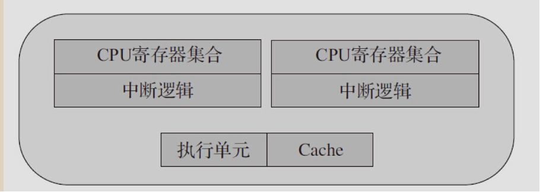
- cpu cores CPU核数
- siblings 超线程个数
- physical id 物理封装CPU号
- processor 逻辑处理器
cat /proc/cpuinfo processor : 0 vendor_id : GenuineIntel cpu family : 6 model : 63 model name : Intel(R) Xeon(R) CPU E5-2667 v3 @ 3.20GHz stepping : 2 microcode : 0x44 cpu MHz : 2564.797 cache size : 20480 KB physical id : 0 siblings : 16 core id : 0 cpu cores : 8 apicid : 0 initial apicid : 0 fpu : yes fpu_exception : yes cpuid level : 15 wp : yes flags : fpu vme de pse tsc msr pae mce cx8 apic sep mtrr pge mca cmov pat pse36 clflush dts acpi mmx fxsr sse sse2 ss ht tm pbe syscall nx pdpe1gb rdtscp lm constant_tsc arch_perfmon pebs bts rep_good nopl xtopology nonstop_tsc cpuid aperfmperf pni pclmulqdq dtes64 monitor ds_cpl vmx smx est tm2 ssse3 sdbg fma cx16 xtpr pdcm pcid dca sse4_1 sse4_2 x2apic movbe popcnt tsc_deadline_timer aes xsave avx f16c rdrand lahf_lm abm cpuid_fault epb invpcid_single pti intel_ppin ssbd ibrs ibpb stibp tpr_shadow vnmi flexpriority ept vpid ept_ad fsgsbase tsc_adjust bmi1 avx2 smep bmi2 erms invpcid cqm xsaveopt cqm_llc cqm_occup_llc dtherm ida arat pln pts md_clear flush_l1d bugs : cpu_meltdown spectre_v1 spectre_v2 spec_store_bypass l1tf mds swapgs itlb_multihit bogomips : 6384.89 clflush size : 64 cache_alignment : 64 address sizes : 46 bits physical, 48 bits virtual power management:
3.2 DPDK的线程独占
- 设置affinity保证只在某个核上运行
- 设置kernel启动参数isolcpus，使得某些核排除在进程调度之外，这些再设置affinity即可保证线程独占
通常上说，控制线程绑定在MASTER核，接受用户输入，数据线程分布在不同核上处理数据包
3.2.1 rte_eal_init里的lcore初始化
- rte_eal_cpu_init中读取sysfs得到当前CPU信息
- eal_parse_args中得到哪些核可用
- 为每个worker核创建线程，同时设置affinity
RTE_LCORE_FOREACH_WORKER(i) {
/*
* create communication pipes between main thread
* and children
*/
if (pipe(lcore_config[i].pipe_main2worker) < 0)
rte_panic("Cannot create pipe\n");
if (pipe(lcore_config[i].pipe_worker2main) < 0)
rte_panic("Cannot create pipe\n");
lcore_config[i].state = WAIT;
/* create a thread for each lcore */
ret = pthread_create(&lcore_config[i].thread_id, NULL,
eal_thread_loop, NULL);
if (ret != 0)
rte_panic("Cannot create thread\n");
/* Set thread_name for aid in debugging. */
snprintf(thread_name, sizeof(thread_name),
"lcore-worker-%d", i);
ret = rte_thread_setname(lcore_config[i].thread_id,
thread_name);
if (ret != 0)
RTE_LOG(DEBUG, EAL,
"Cannot set name for lcore thread\n");
ret = pthread_setaffinity_np(lcore_config[i].thread_id,
sizeof(rte_cpuset_t), &lcore_config[i].cpuset);
if (ret != 0)
rte_panic("Cannot set affinity\n");
}
- 当调用rte_eal_remote_launch时, eal_thread_loop最终会调用int (*f)(void *)
- 当不想lcore和cpu 1:1对应时，可以通过–lcores='<lcore_set>[@cpu_set],…'指定lcore和cpu_set多对多的映射关系
- 用cgroup来限制线程对于物理资源的使用，常用于吞吐量比较小的情况
3.3 DPDK的指令/数据并发
- 多利用SIMD指令
并行/2021-12-31_10-12-52_64-ia-32-architectures-optimization-manual.pdf
/** ICC编译器下*/
/**
* Copy 32 bytes from one location to another,
* locations should not overlap.
*/
static __rte_always_inline void
rte_mov32(uint8_t *dst, const uint8_t *src)
{
__m256i ymm0;
ymm0 = _mm256_loadu_si256((const __m256i *)src);
_mm256_storeu_si256((__m256i *)dst, ymm0);
}
3.4 DPDK的同步互斥
3.4.1 指令原子操作
- 单指令且基本内存操作
- 加LOCK指令前缀
- 缓存一致协议
无锁数据结构的基础XCHG(CMPXCHG)，即CAS(Compare And Set)
CAS操作需要输入两个数值，一个旧值（期望操作前的值）和一个新值，在操作期间先比较下旧值有没有发生变化，如果没有发生变化，才交换成新值，发生了变化，则不交换。
例子:
CMPXCHGr/m，r将累加器AL/AX/EAX/RAX中的值与首操作数（目的操作数）比较，如果相等，第2操作数（源操作数）的值装载到首操作数，zf置1。如果不等，首操作数的值装载到AL/AX/EAX/RAX，并将zf清0。
3.4.2 Linux原子操作
- atomic_t
- 位操作
- 读写锁read_lock*,write_lock*
- spinlock自旋锁，单CPU且不可抢占式的内核下为空操作
注: 线程在spinlock前要禁止当前处理器上的中断，防止获取锁的线程和中断形成竞争条件(没有应该无所谓)
- kfifo 无锁环形缓冲
3.4.3 DPDK应用
- rte_atomic* 原子操作
- rte_rwlock* 读写锁
- rte_spinlock* 自旋锁
- rte_ring 无锁环形缓冲
/**
* An RTE ring structure.
*
* The producer and the consumer have a head and a tail index. The particularity
* of these index is that they are not between 0 and size(ring). These indexes
* are between 0 and 2^32, and we mask their value when we access the ring[]
* field. Thanks to this assumption, we can do subtractions between 2 index
* values in a modulo-32bit base: that's why the overflow of the indexes is not
* a problem.
*/
struct rte_ring {
char name[RTE_RING_NAMESIZE] __rte_cache_aligned;
/**< Name of the ring. */
int flags; /**< Flags supplied at creation. */
const struct rte_memzone *memzone;
/**< Memzone, if any, containing the rte_ring */
uint32_t size; /**< Size of ring. */
uint32_t mask; /**< Mask (size-1) of ring. */
uint32_t capacity; /**< Usable size of ring */
char pad0 __rte_cache_aligned; /**< empty cache line */
/** Ring producer status. */
RTE_STD_C11
union {
struct rte_ring_headtail prod;
struct rte_ring_hts_headtail hts_prod;
struct rte_ring_rts_headtail rts_prod;
} __rte_cache_aligned;
char pad1 __rte_cache_aligned; /**< empty cache line */
/** Ring consumer status. */
RTE_STD_C11
union {
struct rte_ring_headtail cons;
struct rte_ring_hts_headtail hts_cons;
struct rte_ring_rts_headtail rts_cons;
} __rte_cache_aligned;
char pad2 __rte_cache_aligned; /**< empty cache line */
};
- 单生产者入队
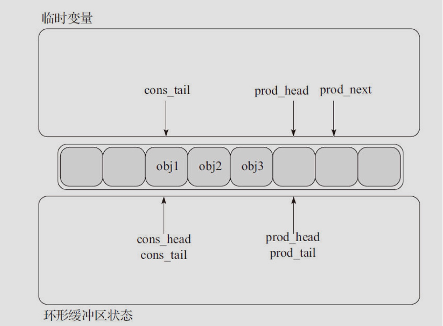
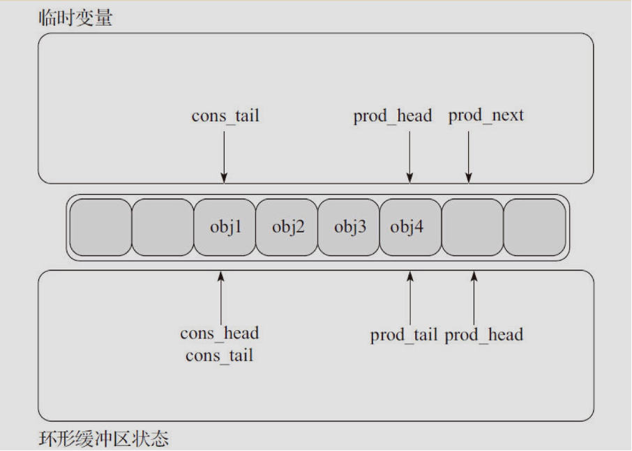
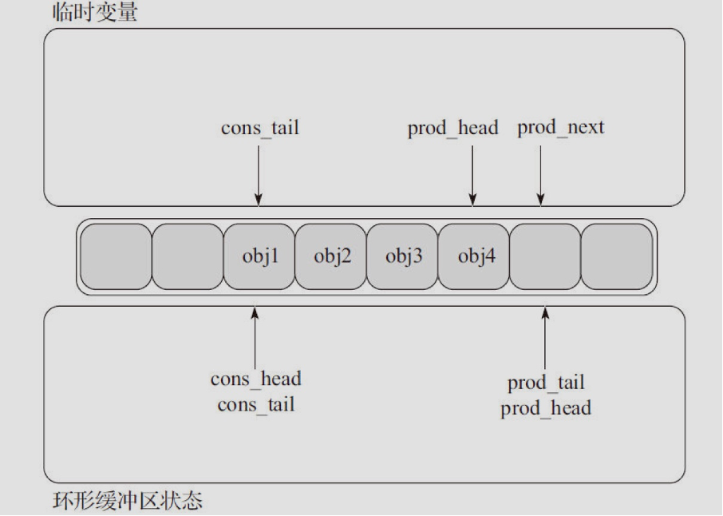
- 单消费者出队
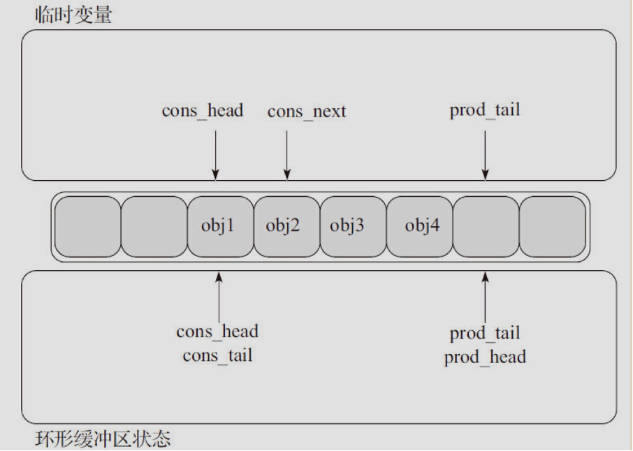
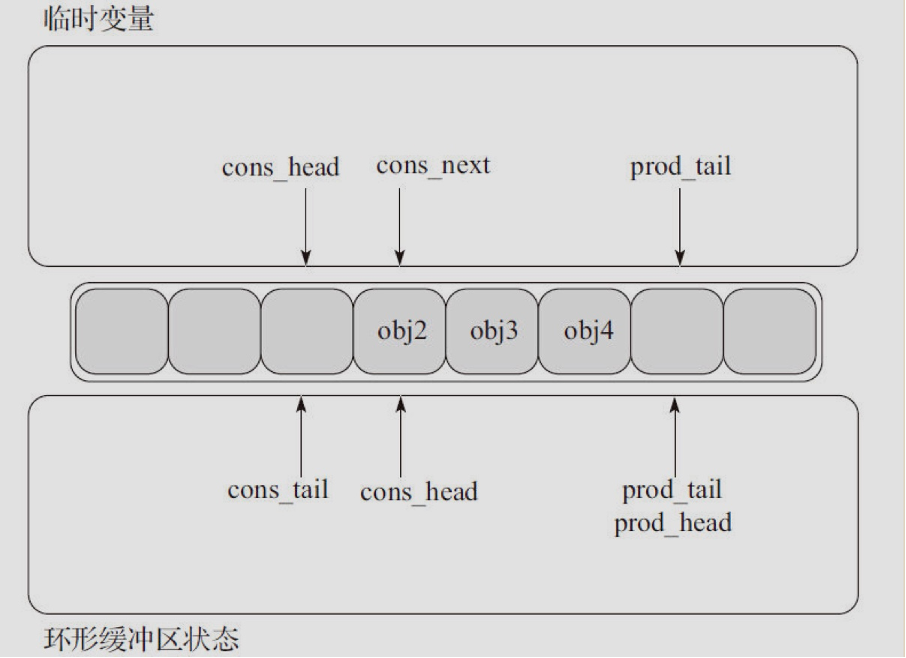
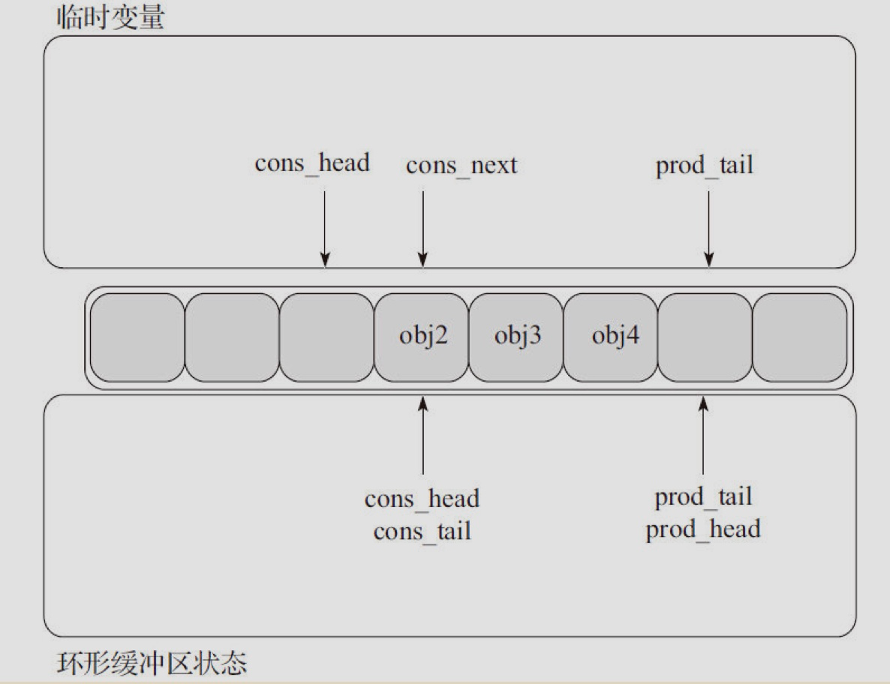
- 多生产消费者入出队
并发时无锁主要依赖CAS操作，即更新新值前可以单指令确保旧值无人修改
4 报文转发
- packet input 报文输入
- pre-processing 粗粒度的处理
- input classification 细粒度分流
- ingress queuing 基于描述符的队列FIFO
- delivery/scheduling 队列优先级/CPU状态调度
- accelerator 提供加解密和压缩/解压缩
- engress queueing 出口QOS
- post proecessing 释放软件缓存
- packet output 硬件发送
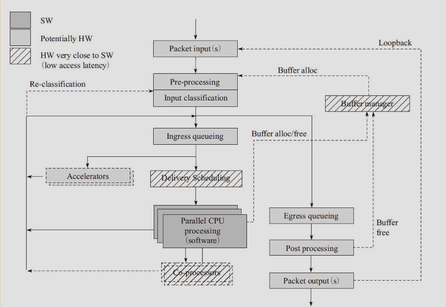
4.1 硬件框架
- pipeline
将一个功能（大于模块级的功能）分解成多个独立的阶段，不同阶段间通过队列传递产品。这样，对于一些CPU密集和I/O密集的应用，通过pipeline模型，我们可以把CPU密集的操作放在一个微处理引擎上执行，将I/O密集的操作放在另外一个微处理引擎上执行。通过过滤器可以为不同的操作分配不同的线程，通过连接两者的队列匹配两者的处理速度，从而达到最好的并发效率。
缺点是 报文处理必须照顺序进行，不可能跳回，即便可以处理速度也会大幅下降 - run to completion
水平扩展使得多核上执行一样逻辑的程序， 缺点是 不会对每个逻辑功能做优化
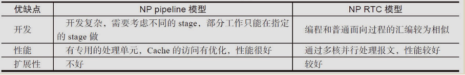
4.1.1 DPDK的转发模型
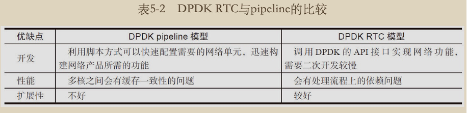
DPDK提供了pipeline框架, 例子在examples/pipeline
4.1.2 转发算法库
精确匹配 - hash
- 冲突链/开放地址解决冲突，DPDK融合了冲突链(最长8个 )和开放地址
- CRC32和Jhash算法
- 代码 lib/hash/
最长前缀匹配 - LPM
- 空间换时间
- 代码 lib/lpm/
ACL
- 规则结构体
/**
* ACL Field definition.
* Each field in the ACL rule has an associate definition.
* It defines the type of field, its size, its offset in the input buffer,
* the field index, and the input index.
* For performance reasons, the inner loop of the search function is unrolled
* to process four input bytes at a time. This requires the input to be grouped
* into sets of 4 consecutive bytes. The loop processes the first input byte as
* part of the setup and then subsequent bytes must be in groups of 4
* consecutive bytes.
*/
struct rte_acl_field_def {
uint8_t type; /**< type - RTE_ACL_FIELD_TYPE_*. */
uint8_t size; /**< size of field 1,2,4, or 8. */
uint8_t field_index; /**< index of field inside the rule. */
uint8_t input_index; /**< 0-N input index. */
uint32_t offset; /**< offset to start of field. */
};
- 代码 lib/acl/
- rte_acl_create, rte_acl_add_rules, rte_acl_build, rte_acl_classify
报文分发
- 代码 lib/distributor
- 用作将报文分发到不同的worker处理后返回
5 PCI-E和I/O
5.1 PCI-E
upstream/inbound - 从endpoint到root complex
downstream/outbound - 从root complex到endpoint
常见的网卡ring如下图，接收和传输队列的头尾指针分别由软件和硬件控制，ring里存的是描述符，一般来说描述符内有DMA完成位
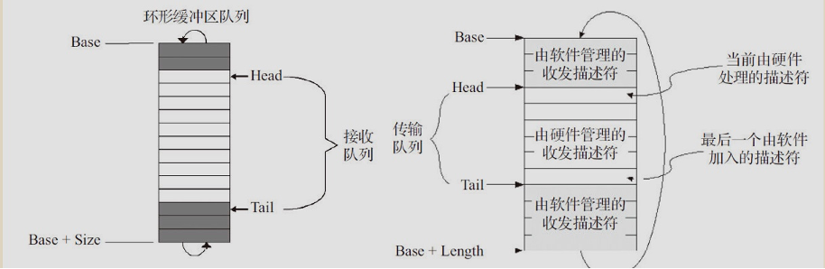
队列在内存里面，控制DMA通过访问外设寄存器完成
对PCI-E/IO的优化
- 发送队列CPU批量分配包内存和对应描述符
- DMA批量回写描述符(RS bit)
- Cache line对齐操作，避免部分写
5.2 Mbuf
将网络包信息和帧本身存在固定大小的同一段内存中
- buf_addr是起始地址
- buf_addr + data_off是帧内容
- pktlen 如果是单帧，和datalen相同，巨帧只能用pktlen
- mbuf存在mempool中，单核缓存一部分数据使得多核CPU访问效率变高
/**
* The generic rte_mbuf, containing a packet mbuf.
*/
struct rte_mbuf {
RTE_MARKER cacheline0;
void *buf_addr; /**< Virtual address of segment buffer. */
/**
* Physical address of segment buffer.
* Force alignment to 8-bytes, so as to ensure we have the exact
* same mbuf cacheline0 layout for 32-bit and 64-bit. This makes
* working on vector drivers easier.
*/
rte_iova_t buf_iova __rte_aligned(sizeof(rte_iova_t));
/* next 8 bytes are initialised on RX descriptor rearm */
RTE_MARKER64 rearm_data;
uint16_t data_off;
/**
* Reference counter. Its size should at least equal to the size
* of port field (16 bits), to support zero-copy broadcast.
* It should only be accessed using the following functions:
* rte_mbuf_refcnt_update(), rte_mbuf_refcnt_read(), and
* rte_mbuf_refcnt_set(). The functionality of these functions (atomic,
* or non-atomic) is controlled by the RTE_MBUF_REFCNT_ATOMIC flag.
*/
uint16_t refcnt;
/**
* Number of segments. Only valid for the first segment of an mbuf
* chain.
*/
uint16_t nb_segs;
/** Input port (16 bits to support more than 256 virtual ports).
* The event eth Tx adapter uses this field to specify the output port.
*/
uint16_t port;
uint64_t ol_flags; /**< Offload features. */
/* remaining bytes are set on RX when pulling packet from descriptor */
RTE_MARKER rx_descriptor_fields1;
/*
* The packet type, which is the combination of outer/inner L2, L3, L4
* and tunnel types. The packet_type is about data really present in the
* mbuf. Example: if vlan stripping is enabled, a received vlan packet
* would have RTE_PTYPE_L2_ETHER and not RTE_PTYPE_L2_VLAN because the
* vlan is stripped from the data.
*/
RTE_STD_C11
union {
uint32_t packet_type; /**< L2/L3/L4 and tunnel information. */
__extension__
struct {
uint8_t l2_type:4; /**< (Outer) L2 type. */
uint8_t l3_type:4; /**< (Outer) L3 type. */
uint8_t l4_type:4; /**< (Outer) L4 type. */
uint8_t tun_type:4; /**< Tunnel type. */
RTE_STD_C11
union {
uint8_t inner_esp_next_proto;
/**< ESP next protocol type, valid if
* RTE_PTYPE_TUNNEL_ESP tunnel type is set
* on both Tx and Rx.
*/
__extension__
struct {
uint8_t inner_l2_type:4;
/**< Inner L2 type. */
uint8_t inner_l3_type:4;
/**< Inner L3 type. */
};
};
uint8_t inner_l4_type:4; /**< Inner L4 type. */
};
};
uint32_t pkt_len; /**< Total pkt len: sum of all segments. */
uint16_t data_len; /**< Amount of data in segment buffer. */
/** VLAN TCI (CPU order), valid if RTE_MBUF_F_RX_VLAN is set. */
uint16_t vlan_tci;
RTE_STD_C11
union {
union {
uint32_t rss; /**< RSS hash result if RSS enabled */
struct {
union {
struct {
uint16_t hash;
uint16_t id;
};
uint32_t lo;
/**< Second 4 flexible bytes */
};
uint32_t hi;
/**< First 4 flexible bytes or FD ID, dependent
* on RTE_MBUF_F_RX_FDIR_* flag in ol_flags.
*/
} fdir; /**< Filter identifier if FDIR enabled */
struct rte_mbuf_sched sched;
/**< Hierarchical scheduler : 8 bytes */
struct {
uint32_t reserved1;
uint16_t reserved2;
uint16_t txq;
/**< The event eth Tx adapter uses this field
* to store Tx queue id.
* @see rte_event_eth_tx_adapter_txq_set()
*/
} txadapter; /**< Eventdev ethdev Tx adapter */
/**< User defined tags. See rte_distributor_process() */
uint32_t usr;
} hash; /**< hash information */
};
/** Outer VLAN TCI (CPU order), valid if RTE_MBUF_F_RX_QINQ is set. */
uint16_t vlan_tci_outer;
uint16_t buf_len; /**< Length of segment buffer. */
struct rte_mempool *pool; /**< Pool from which mbuf was allocated. */
/* second cache line - fields only used in slow path or on TX */
RTE_MARKER cacheline1 __rte_cache_min_aligned;
/**
* Next segment of scattered packet. Must be NULL in the last segment or
* in case of non-segmented packet.
*/
struct rte_mbuf *next;
/* fields to support TX offloads */
RTE_STD_C11
union {
uint64_t tx_offload; /**< combined for easy fetch */
__extension__
struct {
uint64_t l2_len:RTE_MBUF_L2_LEN_BITS;
/**< L2 (MAC) Header Length for non-tunneling pkt.
* Outer_L4_len + ... + Inner_L2_len for tunneling pkt.
*/
uint64_t l3_len:RTE_MBUF_L3_LEN_BITS;
/**< L3 (IP) Header Length. */
uint64_t l4_len:RTE_MBUF_L4_LEN_BITS;
/**< L4 (TCP/UDP) Header Length. */
uint64_t tso_segsz:RTE_MBUF_TSO_SEGSZ_BITS;
/**< TCP TSO segment size */
/*
* Fields for Tx offloading of tunnels.
* These are undefined for packets which don't request
* any tunnel offloads (outer IP or UDP checksum,
* tunnel TSO).
*
* PMDs should not use these fields unconditionally
* when calculating offsets.
*
* Applications are expected to set appropriate tunnel
* offload flags when they fill in these fields.
*/
uint64_t outer_l3_len:RTE_MBUF_OUTL3_LEN_BITS;
/**< Outer L3 (IP) Hdr Length. */
uint64_t outer_l2_len:RTE_MBUF_OUTL2_LEN_BITS;
/**< Outer L2 (MAC) Hdr Length. */
/* uint64_t unused:RTE_MBUF_TXOFLD_UNUSED_BITS; */
};
};
/** Shared data for external buffer attached to mbuf. See
* rte_pktmbuf_attach_extbuf().
*/
struct rte_mbuf_ext_shared_info *shinfo;
/** Size of the application private data. In case of an indirect
* mbuf, it stores the direct mbuf private data size.
*/
uint16_t priv_size;
/** Timesync flags for use with IEEE1588. */
uint16_t timesync;
uint32_t dynfield1[9]; /**< Reserved for dynamic fields. */
} __rte_cache_aligned;
6 网卡性能
6.1 轮询
收包队列对应的软件线程poll收包描述包收包成功的标志
发包队列对应的软件线程设置描述符内的字段，比如EOP和RS，同时轮询RS位确定硬件是否发送完毕
6.2 中断轮询混杂
可根据一段时间的收包流量切换中断或轮询模式
6.3 burst处理
以cache对齐的方式一次处理多个包可以提高效率
static inline uint16_t
rte_eth_tx_burst(uint16_t port_id, uint16_t queue_id,
struct rte_mbuf **tx_pkts, uint16_t nb_pkts);
static inline uint16_t
rte_eth_rx_burst(uint16_t port_id, uint16_t queue_id,
struct rte_mbuf **rx_pkts, const uint16_t nb_pkts);
6.4 队列长度
收包队列
- 越长，mbuf占用越多，分配和释放要更多的时间片
- 越短，mbuf占用越少，但容易挤满队列造成丢包
- 默认长度是128
发包队列
- 越长，mbuf占用越多，分配和释放要更多的时间片
- 越短，mbuf占用越少，硬件需要等软件填充，降低性能
- 默认长度是256
rx_free_thresh DPDK在收包到一个threshold才会更新ring尾部寄存器，默认32
tx_rs_thresh 描述符中可配置硬件是否回写，通过每threshold个包回写一次来提高性能，默认32，这个需要硬件支持
tx_free_thresh DPDK在只剩threhold可用描述符才释放，默认32
7 多队列
7.1 linux kernel
- 每个接收队列设定对应的中断号，设定affinity，每个队列绑定到特定的核
- 收发队列在同一个中断
- 发送队列根据map<硬件队列，CPU>确定发送队列
- rx queue为NAPI机制，中断后变成poll，处理完所有的包再变为中断模式
- tx queue为QDisc机制，发送前Qos
7.2 网卡
常见的硬件队列分配
- 过滤报文
- DMA队列分配
- 报文暂存在FIFO
- 转移至DMA
- 更新描述符
硬件队列分配技术
- RSS 根据报文关键字hash
- Flow Director 比RSS更为灵活，网卡有一张映射表，不同类型的包有不同的关键字
- Qos 队列从Round-Robin变为加权分配
VF&PF支持(Intel CPU为例)
- enable iommu on BIOS(Intel VT)
- 生成vf
echo 1 > /sys/bus/pci/devices/0000:02:00.0/sriov_numvfs
modprobe pcistub
echo "8086 154c" > /sys/bus/pci/drivers/pcistub/new_id
echo 0000:02:02.0 >/sys/bus/pci/devices/0000:2:02.0/driver/unbind
echo 0000:02:02.0 >/sys/bus/pci/drivers/pcistub/bind
7.3 HW Offload
rte_mbuf->ol_flags中带有hw offload的信息
常见的HW offload
- vlan收发解析和过滤
- IEEE1588 PTP, rte_eth_timesync_enable
- 报文各层的checksum,注意tx方向需要软件填充相关报文信息帮助硬件运算
- VxLAN和NVGRE
- TSO&RSC, TCP tx分片和rx组装
8 IO虚拟化
| 全虚拟化 | guest不感知虚拟化 |
| 半虚拟化 | 通过guest和host的消息交互 |
| IO透传 | 授权guest物理设备权限 |
Intel VT-d 解决IO透传中硬件DMA地址为guest地址，VT-d将其转化为host地址，同时定义了域，guest只能访问域内空间
8.1 SR-IOV
PCI-SIG定义的硬件虚拟化
| PF | 支持SR-IOV扩展的PCI-e，用于配置和管理SR-IOV |
| VF | 精简的资源集，可以通过PF创建和销毁 |
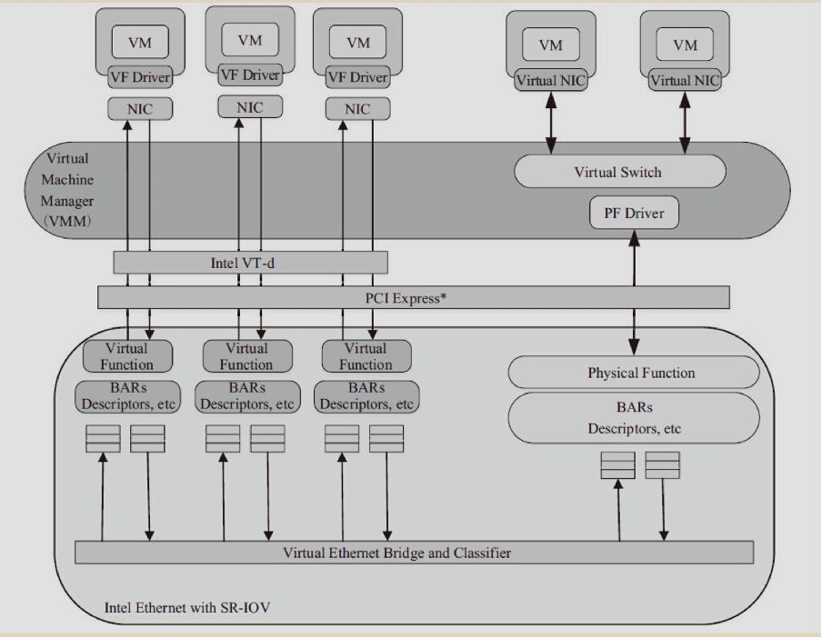
8.2 Virtio
相对于SR-IOV来说是纯软件实现，所以灵活性比SR-IOV高，但性能比SR-IOV低
9 应用场景
NFV
虚拟化接口 描述 DPDK API IVSHMEM 基于Qemu，将主机上的一个内存块映射为虚拟机里的一个PCI设备 rte_ivshmem Virtio 纯软件的虚拟化 drivers/net/virtio SR-IOV 实体PCI虚拟化成多个VF N/A Open vSwitch
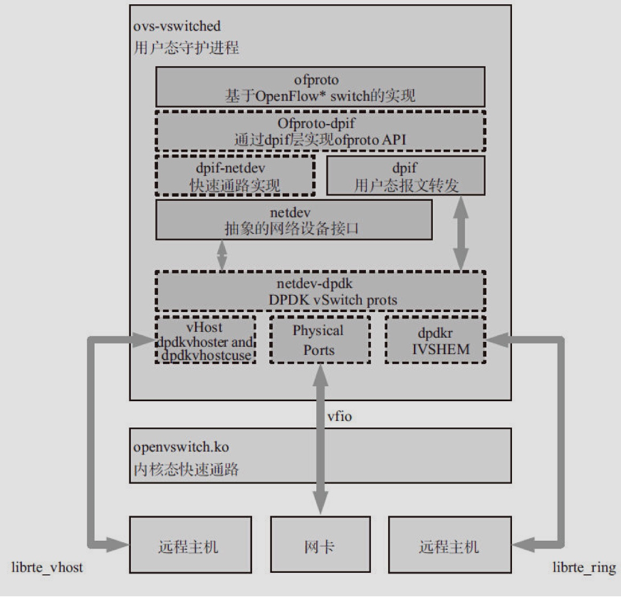
带dpdk的ovs收包不再通过openvswitch.ko,而是通过DPDK PMD驱动直接到达用户态ovs-vswitchd里
- 基于DPDK的用户态tcp协议栈
- f-stack
- mtcp
- libuinet
- openfastpath
- spdk 高性能存储方案，里面带的libuns是一个tcp/ip协议栈
- f-stack